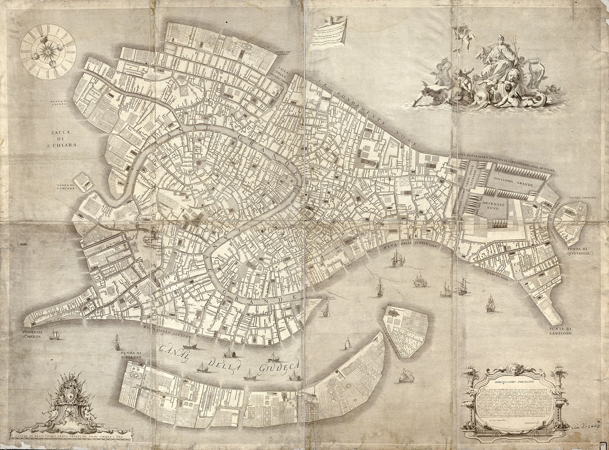

Ricostruisci la rete nascosta… senza mai vederla.
Sotto Venezia scorre una rete di cunicoli antichissima. Nessuno ne ha la mappa: è buia, allagata e nessuno può entrarci.
Ma noi abbiamo un trucco da detective: nei tombini blu abbiamo messo dei sensori. Tocca un tombino per versare un tracciante colorato e osserva dopo quante ore riaffiora negli altri tombini e negli sbocchi gialli in laguna.
Se i tempi bastano, potrai ricostruire l'intera rete… proprio come i biologi ricostruiscono l'albero dell'evoluzione confrontando i geni delle specie. 🧬
Ore di viaggio del tracciante tra ogni coppia di punti (incrociando i dati di tutti i sensori). Più il colore è caldo, più il viaggio è lungo.
Ogni punto della mappa è diventato una foglia di un albero: i numeri sui tratti sono ore di viaggio, e la distanza tra due foglie è la somma dei tratti sul percorso. I tratti tratteggiati valgono 0 ore: punti attaccati allo stesso incrocio (guarda T2 e S2!).
🔎 Per i detective esperti: T3 e S4 sulla mappa erano vicinissimi… ma nella rete distano 8,4 ore. Perché la geografia in superficie può ingannare?